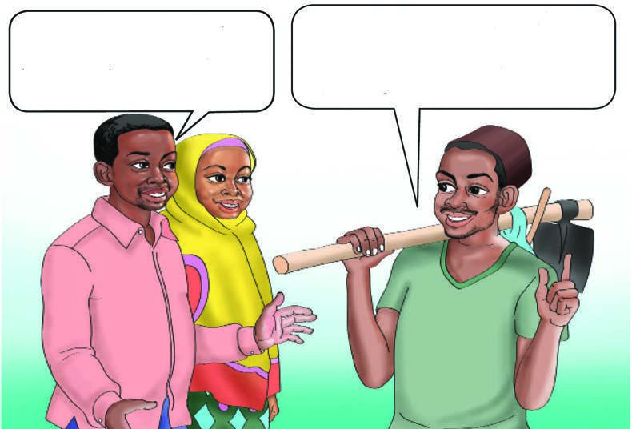
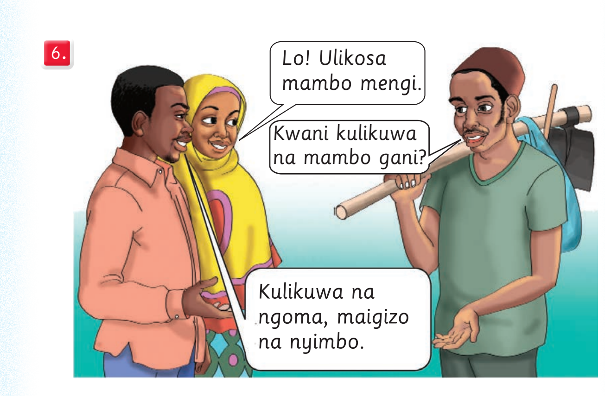

Chunguza picha na mazungumzo, kisha andika alama za uandishi zilizotumika; tumia eneo la kuandikia, kibodi au Breli.

Ee! Bwana Hemedi, mbona hatukukuona kwenye sherehe juzi? Nilishindwa kuja. Nilikuwa shambani ninapalilia mahindi, mtama na mbaazi.
Chunguza picha na mazungumzo, kisha andika alama za uandishi zilizotumika; tumia eneo la kuandikia, kibodi au Breli.

Lo! Ulikosa mambo mengi. Kwani kulikuwa na mambo gani? Kulikuwa na ngoma, maigizo na nyimbo.
Mfano:Mfano:
1. Sentensi kwenye picha namba 1 imetumia alama
ya nukta.
1. Sentensi kwenye picha namba 1 imetumia alama
ya nukta.
25